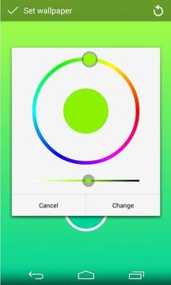

选两个颜色就能刷出一面壁纸？这个 1MB 的安卓小工具我用了一上午
一款活了十多年的安卓渐变壁纸工具，选两种颜色就出渐变，直接上墙不存图也不压缩。实测体验 + 几个容易踩的坑。
说实话我装 mixt 完全是随手点进去的。前阵子旧手机换屏后屏幕泛黄，原本那些风景壁纸、动漫图一铺上去就显得发脏，朋友随口说了句"不如换一面纯色的"，我就想找个能自己调色生成壁纸的小工具——不是那种给素材图库让你挑一张的，而是真的让我动手配颜色的。
搜了一圈下来要么是广告堆到离谱，要么功能多到离谱（要我登录账号、要会员才能用渐变色、要申请一堆权限）。最后看到有人提了一句mixt官网——1MB 大小，选两色出渐变，安装包从官方下载拿的——半信半疑地去装了。
第一眼：比我想的还"小"
打开应用的瞬间我才明白为什么有人说它"从 2014 年活到今天"——界面上真的只有一面默认的橙红渐变背景，正中间一个白色圆按钮写着 PICK COLORS。没有侧边栏、没有底部菜单、没有广告横幅、没有新手引导弹窗，连"设置"两个字我都找了好一阵（藏在右上角一个几乎看不见的小齿轮里）。
点那个白色圆按钮，屏幕会分成上下两半——上面选"渐变顶色"，下面选"渐变底色"，中间一道非常朴素的色轮。用手指在色轮上划，上半部分的颜色就跟着变；再划下半部分，整个屏幕立刻变成新的两色渐变。整个过程连加载动画都没有，选完颜色的瞬间渐变就重绘完了，流畅得让我怀疑是不是根本没做什么运算。

说实话这种极简让我有点不习惯——现在的应用恨不得一打开就给你推通知、弹评分请求、塞会员试用。mixt 倒好，我点完 PICK COLORS，选了个上面青下面蓝，它就安安静静待在那里等我决定要不要存。
实际用下来：三个让我印象最深的点
直接上墙，这步真的省了很多事
我之前用其他工具生成过渐变壁纸，流程一般是：生成 → 存相册 → 退桌面 → 长按空白 → 选"壁纸" → 从相册挑 → 裁切 → 应用。七步，中途系统壁纸选择器还可能帮你再压缩一次，渐变就会出现一道道发灰的色带。
mixt 不一样——配色满意了直接在应用内点对勾，它就调系统接口把当前渐变设成壁纸，中间零次额外压缩。我特意对比了一下：应用内直设的壁纸跟我截应用主界面的截图比，色彩过渡确实更干净，那条被系统壁纸选择器"压坏"的接缝完全看不到了。
后来翻mixt文档才注意到官方有个很实在的提醒：如果你非要存图然后用系统选择器设壁纸，那系统会再压一次，色带就是这么来的。它推荐要么应用内直设，要么存图后用第三方看图应用（比如 QuickPic）来调"设为壁纸"的接口——绕开系统那个多事的中间层就行。
色轮体验：好的直觉设计 vs 两个小遗憾
色轮本身好用——我用手指随便划就能快速找到想要的色调，手滑了还有一个双向箭头在界面中间一键交换上下两色，这个设计太对我这种经常选反色的人胃口了。选完总觉得"差一点"，还能直接输入 Hex 色值精确指定，品牌色、主题色直接抄数字就行，不用在色轮上慢慢磨。
但有两个地方我觉得还能更顺手。第一是没有吸管——我想从一张参考图里吸个颜色过来，不行，得先用别的工具查出色值再手动输入。这个问题在用户讨论区被吐槽了好几年，开发者始终没加，大概是想保持"只做两色渐变"这个核心定位吧。
第二是没有历史配方。我上午配了一套"上面深紫下面浅粉"的渐变觉得特别好看，下午想再配一遍来当微信聊天背景，找不到了——应用不保存，相册里又没存图（因为直接上墙了），只能凭印象重新配色，调了五分钟才接近那感觉。现在我的习惯是：凡是满意的配色都顺手存一张进相册，相册本身就是个配方存档了。

包体小不代表没花样
1MB 左右的包体让我先入为主觉得它只能做一种事——上半色下半色的直线渐变。实际用下来发现 2.0 之后它加了不少小玩法：波点图案能给纯色壁纸加一层疏密可调的圆点阵列，比光秃秃一面纯色有层次多了；单色壁纸模式适合配图标包——我把 Nova Launcher 的图标包主色填进去，生成一面同色系纯色墙，整套桌面瞬间协调了。
还有人拿它做"屏幕分区"：上浅下深的渐变把视觉重心压到底部 dock 区，适合图标多的布局；上深下浅则把黑色状态栏"藏"进深色壁纸里，白色状态栏图标在上面特别清晰。我试了后者，搭配 MIUI 的深色状态栏图标确实比之前舒服。
踩过的两个坑
第一个是远距色渐变会发灰发脏。我一开始瞎选了一个上面正红下面正蓝的渐变，中间那段过渡区脏得像蒙了一层灰，以为是应用的 bug。后来才知道这是开发者官方文档里写的第一条警告——色环上离得太远的两色，在渐变中段会路过浑浊的间色。解法很简单：换邻近色或者同色不同明度，比如上面深蓝下面浅蓝，怎么配都不会脏。
第二个是存图再设壁纸等于白做一半。应用保存到相册的图本身没问题，但走系统壁纸选择器再压一遍就会出色带。记住：要么应用内直设、要么存图后用第三方看图应用设壁纸。这条我踩了一次坑之后就牢牢记着了。
适合谁，不适合谁
适合想要一张干净、没有杂物的渐变或纯色壁纸的人——不想要别人挑好给你、就想自己动手配颜色的那种。旧手机屏幕泛黄想"盖住"瑕疵、配图标包想找协调底色、聊天背景想要干净纯色、做设计参考想快速生成双色示意卡片，这些场景用它五分钟内能交货。
不适合找壁纸图库的人——它完全不提供素材、不接图库、不做社区分享；也不适合想修图、加滤镜、抠图的人——个人化类目里它是"造色"而非"修图"。
最后
我用了大概一上午，配了七八套颜色，换了三副壁纸。它给我的最大感受不是"功能强大"，而是它清楚自己要做什么——选两色、出渐变、直接上墙，多一个功能都不加，连广告都没一条。在这个应用恨不得塞进所有功能按钮才能上架的时代，能把一件小事做得这么纯粹，反而成了最大的卖点。
我现在把它放在桌面文件夹的角落，不显眼但每次想换壁纸都会想起它。这大概就是好工具该有的样子——平时存在感为零，需要的时候打开就能用，用完就走。
这套"你自己调色它来刷墙"的工具和相关资料，在 GitHub、Gitee、GitCode 三个仓库都能拿到，文档维护也同步更新着版本变化和配色技巧。